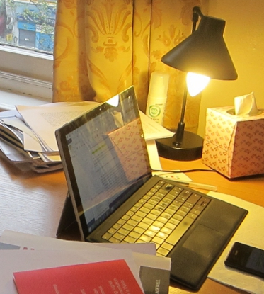

One aspect that gets articulated repeatedly in the ethnography is creating an environment that has both characteristics of private and public spaces. Home has generally been perceived to exist in the private sphere, but the boundaries between the private and the public as well the separations of different rooms in the home according to their functions were consciously enforced in the 19th century in Britain (Morley, 2002)1.
The division between the private and the public has become blurry with the proliferation of home media, and much research has been done on the meaning of televisions in the home (e.g. Morley, 1986)2.
The home I visited was inhabited by an international student in London, who was busy with studies. Thus, no television set was present in the space. C did possess an external CD-Rom which she could plug to her laptop to watch DVDs, and she could access music and video contents from the Internet. Since the laptop was also the main device which she used to write essays and papers, it can be seen as another environment where boundaries are blurred. After all, it is difficult to distinctly categorize certain computer usages as private and others as public.

The mobile phone is another interesting example. Its most important feature were supposed to be making and taking calls and text messaging. Modern smartphones are essentially small portable computers where people can achieve basic computing tasks. During an interview, C mentioned using the mobile phone on London Overground to connect to Google Scholar and search for relevant studies to read at home, so the phone was a channel that linked the public back to the private (if such distinction still makes sense). In terms of reading at home, C's mobile phone was used as a dictionary.
Finally, as discussed in a different post3, the most generative environment for C to work in was a space where she could felt the presence of others but not having to interact with them. The balance of isolation and company is the source of comfort in her household and possibly in others.
Morley, D. (2002). Home territories: Media, mobility and identity. London: Routledge. ↩
Morley, D. (1986)[2005]. Family television: Cultural power and domestic leisure. London: Routledge. ↩
https://debbyca.github.io/2016/02/29/a-brief-account-of-the-personal-library/index.html ↩